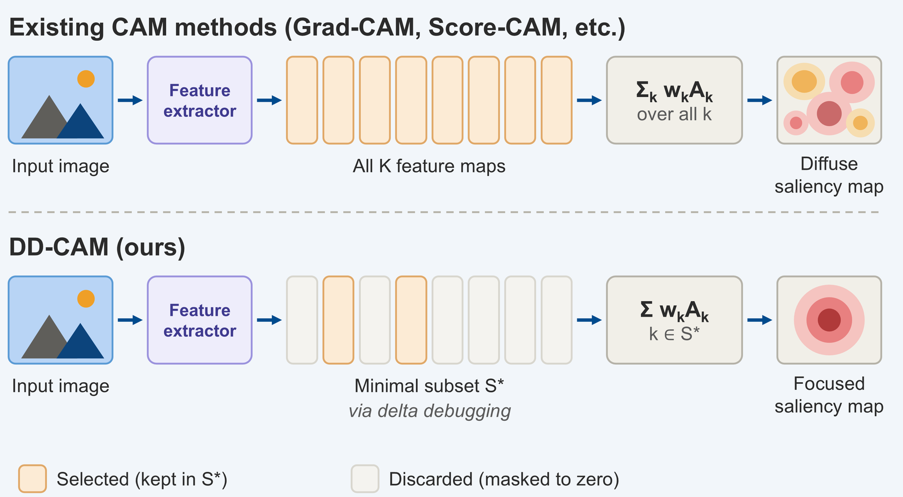
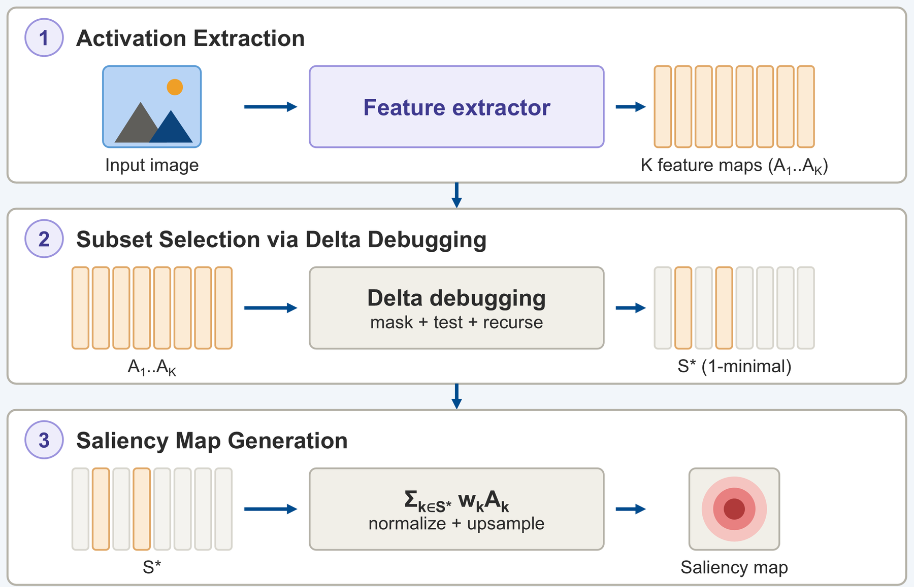

Motivation

What a CAM should do
Given a vision model M, an image x and a predicted class ŷ, produce a saliency map showing the regions that drive the prediction.
How current CAMs work
They combine all K feature maps, which can produce a diffuse saliency map rather than a tight, sufficient region.
Key insight
Use only the feature maps needed to preserve ŷ:
- Sufficient: activating only S* preserves the prediction
- 1-minimal: masking any one map changes the prediction
DD-CAM. Uses delta debugging to find a 1-minimal sufficient set of feature maps S*, and builds the saliency map from those maps only.
Our Approach: DD-CAM

![Worked example of delta debugging on 8 feature maps where only maps 2 and 4 are truly necessary, starting with n = 2. Step 1: mask maps 5 to 8; the prediction is preserved, so S becomes 1 to 4. Step 2: mask 1 and 2, then 3 and 4; both break the prediction, so n increases to 4. Step 3: mask singleton 1; preserved, so S becomes 2, 3, 4 and n = 2. Step 4: mask 2 and 3, then 4; both break, so n increases to 3. Step 5: mask singleton 3; preserved, so S becomes 2 and 4. Result: S* = {2, 4} is 1-minimal, since masking map 2 or map 4 alone breaks the prediction.](static/images/fig_worked_example.png)
Worked example
8 feature maps, of which only 2 and 4 are needed. Delta debugging masks groups of feature maps, keeps a group when the prediction survives and splits finer when it breaks.
Stopping rule
Masking any retained feature map changes the prediction.
Experimental Setup
Datasets
- ImageNet: 2,000 random validation images
- ChestX-ray14: 884 boxes, 791 images, DenseNet-121
Architectures
- CNN linear heads: ResNet-50, EfficientNet-B0, Inception-v3
- CNN non-linear heads: VGG-11, VGG-16, VGG-19
- Vision Transformers: ViT-B/16, ViT-L/16
Metrics
- Faithfulness: ADCC, Average Drop (AD), Coherency (Coh), Complexity (Com), Increase in confidence (Inc), Deletion drop (ADD)
- Localization: Intersection over Union (IoU), F1
- Stability: Jaccard of selected feature maps, saliency-map IoU
Baselines
- CAM: Grad-CAM, Grad-CAM++, XGrad-CAM, Layer-CAM, Score-CAM, Ablation-CAM, Recipro-CAM
- Other: Extremal Perturbation (EP), RISE, Integrated Gradients (IG), SHAP, SIS, LIME; Attention Rollout (ViT)
Faithfulness
DD-CAM highlights regions important for the prediction: better scores than baselines in 13 of 18 settings
| Group | ADCC ↑ | AD ↓ | Coh ↑ | Com ↓ | Inc ↑ | ADD ↑ |
|---|---|---|---|---|---|---|
| CNN linear | 0.809Grad-CAM 0.801 | 0.139Recipro-CAM 0.151 | 0.988Grad-CAM++ 0.986 | 0.214SIS 0.144 | 0.467Score-CAM 0.437 | 0.387EP 0.416 |
| CNN non-linear | 0.787Recipro-CAM 0.775 | 0.161Score-CAM 0.168 | 0.983Recipro-CAM 0.976 | 0.217SIS 0.140 | 0.312XGrad-CAM 0.311 | 0.542LIME 0.569 |
| ViT | 0.833Score-CAM 0.810 | 0.101Recipro-CAM 0.138 | 0.997Recipro-CAM 0.985 | 0.119IG 0.111 | 0.472Recipro-CAM 0.425 | 0.494EP 0.443 |
Shaded: DD-CAM ahead. Grey text: best baseline.
↑ higher is better, ↓ lower is better.
AD: Average Drop · Coh: Coherency · Com: Complexity · Inc: Increase in confidence · ADD: Deletion drop.
Localization
DD-CAM overlaps radiologist boxes 45% more than the next-best method (IoU 0.263 vs 0.181)
| Method | IoU |
|---|---|
| DD-CAM (ours) | 0.263 |
| Recipro-CAM | 0.181 |
| SIS | 0.177 |
| Extremal Perturbation | 0.170 |
| LIME | 0.139 |
| Layer-CAM | 0.137 |
| Grad-CAM++ | 0.135 |
| RISE | 0.104 |
| Integrated Gradients | 0.103 |
| SHAP | 0.090 |
| Grad-CAM | 0.060 |
| Ablation-CAM | 0.059 |
| Score-CAM | 0.055 |
| XGrad-CAM | 0.049 |
| Method | F1 |
|---|---|
| DD-CAM (ours) | 0.425 |
| Recipro-CAM | 0.348 |
| SIS | 0.285 |
| Extremal Perturbation | 0.318 |
| LIME | 0.267 |
| Layer-CAM | 0.277 |
| Grad-CAM++ | 0.257 |
| RISE | 0.193 |
| Integrated Gradients | 0.198 |
| SHAP | 0.184 |
| Grad-CAM | 0.123 |
| Ablation-CAM | 0.119 |
| Score-CAM | 0.115 |
| XGrad-CAM | 0.108 |
Stability
Different 1-minimal sets yield the same saliency map for most images
1.00
median IoU between saliency maps (mean 0.83)
55%
of images give pixel-identical saliency maps
The selected feature-map sets barely overlap (median Jaccard 0.002), yet the saliency maps overlap almost fully.
12 feature-map orderings, ResNet-50, 100 ImageNet images
Takeaways
- 1-minimal sufficient set: yields higher-quality saliency maps
- Faithfulness: highlights regions important for the prediction, with better scores than baselines in 13 of 18 settings
- Localization: IoU 0.263 vs next-best 0.181
- Stable maps: 55% of images give pixel-identical maps across 12 orderings
BibTeX
@inproceedings{khadka2026ddcam,
title = {{DD-CAM}: Minimal Sufficient Explanations for Vision Models Using Delta Debugging},
author = {Khadka, Krishna and Lei, Yu and Kacker, Raghu and Kuhn, D. Richard},
booktitle = {Advances in Neural Information Processing Systems (NeurIPS)},
year = {2026}
}